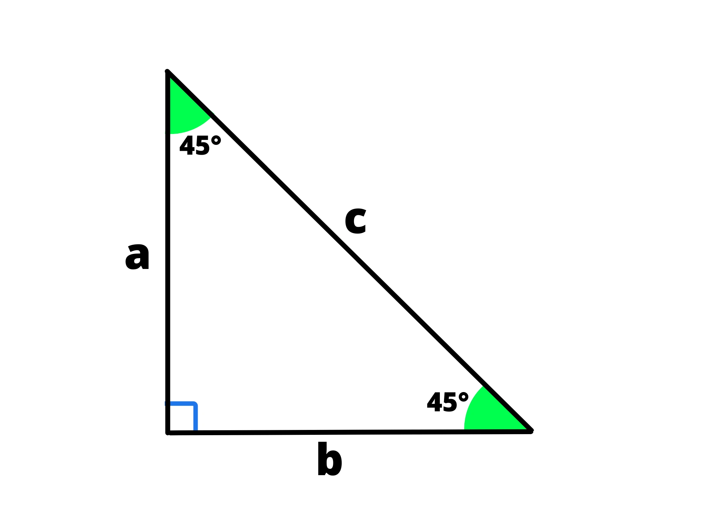

Esistono dei casi particolari di triangoli che godono di alcune proprietà. Conoscerle ci permette di risolvere molto più facilmente alcuni problemi.
Un triangolo è detto rettangolo se uno dei suoi angoli è un angolo retto. Si chiama così perché è metà di un rettangolo:
La proprietà più famosa è il teorema di Pitagora:
La somma delle aree dei quadrati costruiti sui cateti è uguale all’area del quadrato costruito sull’ipotenusa.
In altre parole, nel triangolo sopra, avremo:
\(a^2 + b^2 = c^2\)
Esistono poi molte altre proprietà interessanti dei triangoli rettangoli, ma le vedremo più avanti con la trigonometria.
Un triangolo è detto isoscele se ha due lati uguali. I due lati uguali vengono detti i “lati obliqui” mentre il terzo si chiama “base”.
Alternativamente, si può anche definire un triangolo isoscele come un triangolo con due angoli uguali. Siccome la prima condizione comporta la seconda e viceversa, potete usare entrambe.
Il triangolo isoscele gode di una proprietà interessante:
L’altezza della base è anche uguale alla bisettrice e alla mediana dell’angolo opposto:
Avremo quindi che data una delle tre seguenti condizioni:
Allora anche le altre due devono essere vere.
Un triangolo è detto equilatero se tutti i suoi lati sono uguali. Alternativamente, possiamo dire, come nel caso del triangolo isoscele, che un triangolo è equilatero se tutti i suoi angoli sono uguali. Anche in questo caso la prima condizione include la seconda e viceversa, quindi potete usare entrambe, anche se è più comune la prima.
Il triangolo equilatero è un caso particolare di triangolo isoscele in cui anche la base è uguale al lato obliquo. Di conseguenza, anch’esso gode della proprietà dei triangoli isosceli vista in precendenza, che però vale per tutti i lati e non solo per la base.
Tracciando l’altezza da uno dei vertici, per questa proprietà dobbiamo avere:
\(AH = HB\)
Siccome abbiamo inoltre che:
\(AH+HB=AB\)
Otteniamo che:
\(AH+AH=AB\)
\(AH={AB \over 2}\)
Possiamo quindi applicare il teorema di Pitagora nel triangolo rettangolo \(\overset{\Delta}{AHC}\) per trovare l’altezza \(h\) (\(CH\)) in funzione del lato \(l\) (\(AB\) ). Avremo quindi:
\(AH^2 + CH^2 = CA^2\)
\(({AB\over 2})^2 + CH^2 = AB^2 \)
\({l\over 2}^2 +h^2 = l^2 \)
\(h^2 = l^2 – {l^2 \over 4}\)
\(h^2= {4l^2 –l^2 \over 4}\)
\(h= \sqrt{3l^2 \over 4}\)
\[h={\sqrt{3} \over 2} l\]
Esistono alcuni triangoli rettangoli particolari che godono di alcune proprietà che ci permettono di risolvere molti problemi molto più velocemente. Iniziamo dal triangolo “\(45^{\circ} - 90 ^{\circ} - 45^{\circ}\)”:
Abbiamo detto che un triangolo rettangolo si chiama così perché è la metà di un rettangolo. Cosa succede però se prendiamo un caso particolare di rettangolo: il quadrato? Il tal caso otterremo un triangolo rettangolo isoscele:
Possiamo utilizzare il teorema di Pitagora per trovare la diagonale \(d\) (che sarebbe l’ipotenusa del triangolo) conoscendo il lato \(l\) (che sarebbe il cateto del triangolo):
\(l^2 + l^2 = d^2 \)
\(d^2 = 2l^2\)
\(d=\sqrt{2} l\)
Esiste un altro caso particolare di triangolo rettangolo: il triangolo “\(30^{\circ} – 90^{\circ} – 60^{\circ}\)”. Notiamo infatti che è la metà di un triangolo equilatero:
Di conseguenza, utilizzando le proprietà del triangolo equilatero che abbiamo visto prima, avremo:
\[b={c\over 2}\]
\[a={\sqrt{3} \over 2} c\]
Utilizzando queste due formule, quindi, possiamo trovare tutti e tre i lati conoscendone uno qualsiasi.